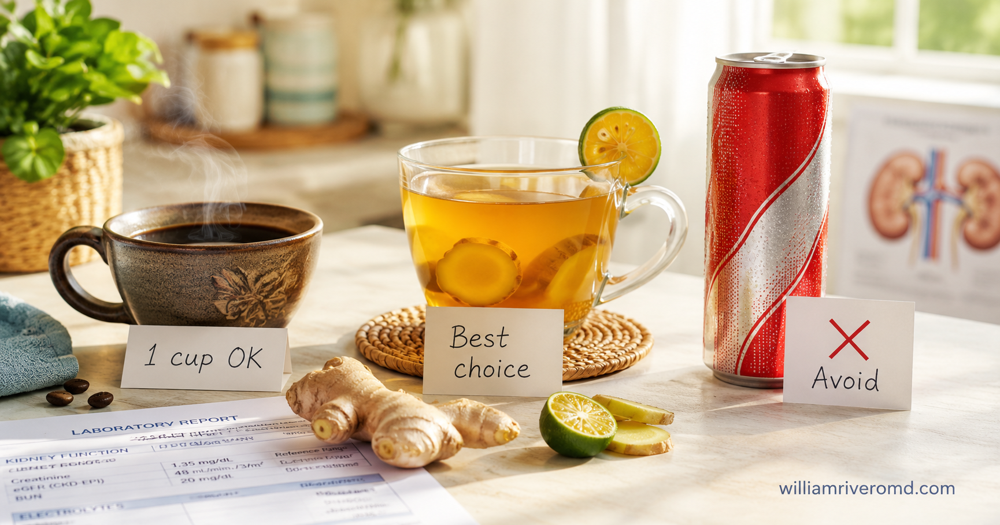
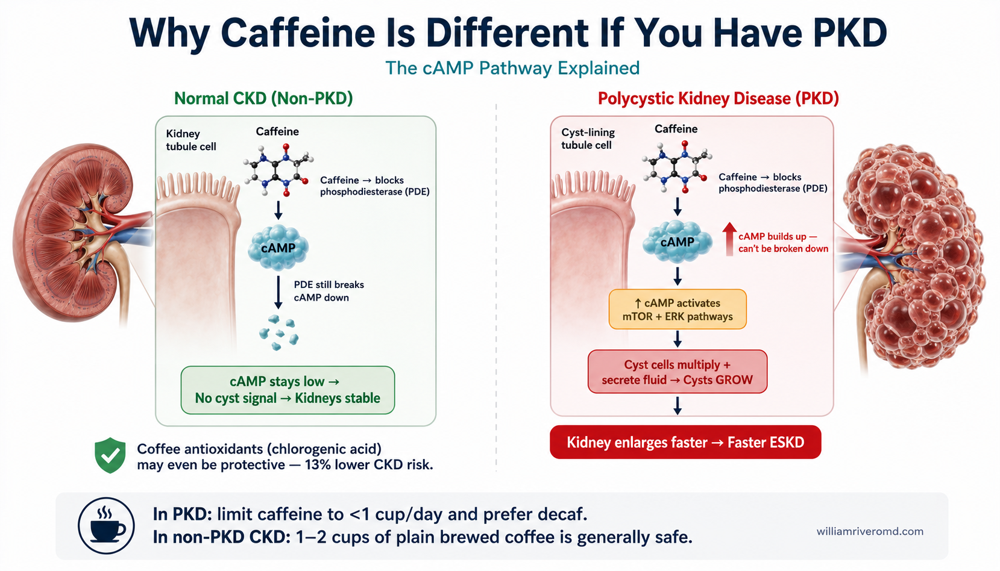
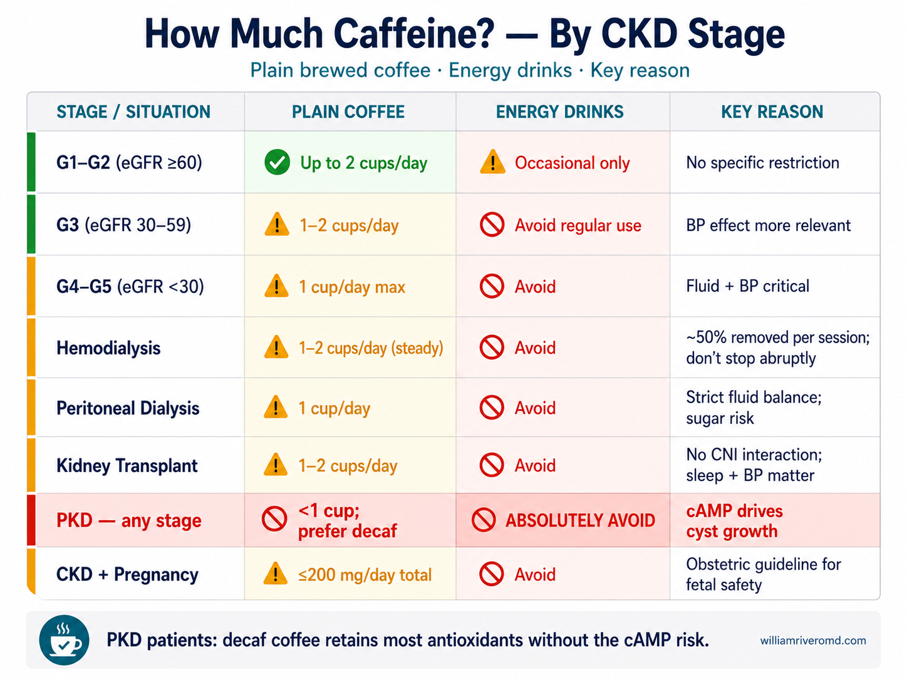
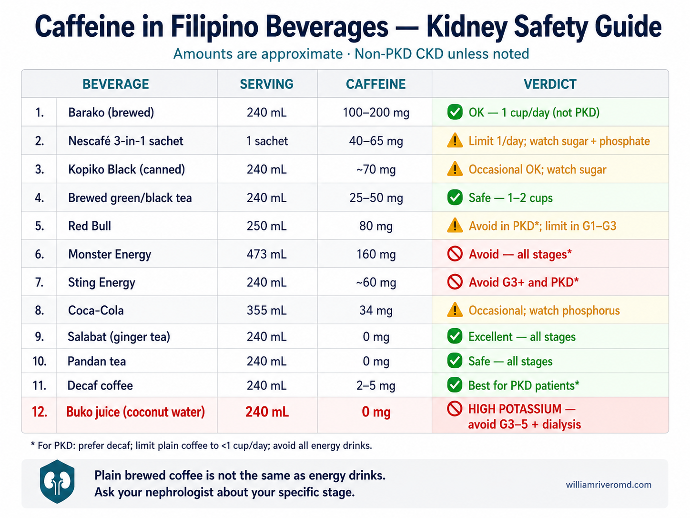

Caffeine, Coffee & Kidney Disease — What's Actually Safe to Drink?Caffeine, Kape at Kidney Disease — Ano ang Talagang Ligtas Inumin?Caffeine, Kape ug Kidney Disease — Unsa Gyud ang Luwas Inumon?Caffeine, Kape at Kidney Disease — Nanu Talaga ing Ligtas Inumin?
Your morning barako might actually be helping your kidneys — unless you have PKD. The science on caffeine and CKD is more nuanced than a simple "avoid it." This guide covers coffee, salabat, energy drinks, 3-in-1 sachets, and Filipino teas — with clear rules by CKD stage, PKD status, and dialysis.Ang inyong barako sa umaga ay maaaring tumutulong sa kidney — maliban kung may PKD kayo. Mas kumplikado ang agham tungkol sa caffeine at CKD kaysa simpleng "iwasan." Sinasaklaw ng gabay na ito ang kape, salabat, energy drinks, 3-in-1 sachets, at Filipino teas — na may malinaw na tuntunin ayon sa CKD stage, PKD, at dialysis.Ang imong barako sa buntag mahimong makatabang sa kidney — gawas kung adunay PKD ikaw. Mas komplikado ang siyensya mahitungod sa caffeine ug CKD kaysa simple nga "likayi." Gisakop sa giya kini ang kape, salabat, energy drinks, 3-in-1 sachets, ug Filipino teas — nga adunay klaro nga mga lagda sumala sa CKD stage, PKD, ug dialysis.Ing barako mu king kaaldawan maaring makatulong king batu — maliban kung may PKD ka. Mas kumplikado ing agham tungkul king caffeine at CKD kaysa simpleng "iwasan." Sinasaklaw ning gabay ini ing kape, salabat, energy drinks, 3-in-1 sachets, at Filipino teas — na may malinaw na patakaran ayon king CKD stage, PKD, at dialysis.
Author: W Rivero, MD, FPCP, DPSNEvidence: CJASN 2021 · GeroScience 2024 · Eur J Intern Med 2020Last ReviewedHuling Na-reviewKatapusang Na-reviewKarinan Na-review:Reading timeOras ng pagbasaOras sa pagbasaOras ning pamamasa:

If you have chronic kidney disease but NOT polycystic kidney disease, moderate coffee consumption may actually be protective — large meta-analyses show a 13% lower risk of developing CKD among regular coffee drinkers. But energy drinks, sugar-loaded 3-in-1 sachets, and high-dose pre-workout caffeine are a very different story. This guide untangles the nuance — with clear rules for your specific situation.Kung mayroon kang chronic kidney disease ngunit WALANG polycystic kidney disease, ang moderate na pag-inom ng kape ay maaaring makapagprotekta — malaking meta-analysis ang nagpapakita ng 13% na mas mababang panganib ng CKD sa regular na umiinom. Ngunit ang energy drinks, 3-in-1 na puno ng asukal, at mataas na dosis ng caffeine sa pre-workout ay ibang usapan. Inilalahad ng gabay na ito ang pagkakaiba — na may malinaw na tuntunin para sa inyong sitwasyon.Kung adunay ikaw chronic kidney disease apan WALAY polycystic kidney disease, ang moderate nga pag-inom sa kape mahimong magprotekta — dagkong meta-analysis nagpakita og 13% nga mas ubos nga peligro sa CKD sa regular nga moinom. Apan ang energy drinks, 3-in-1 puno sa asukal, ug taas nga dosis sa caffeine sa pre-workout lahi ang istorya. Gilinaw sa giya kini ang kalainan — nga adunay klaro nga mga lagda alang sa imong sitwasyon.Kung mayroon kang chronic kidney disease pero WALA kang polycystic kidney disease, ing moderate na pag-inom ning kape maaring makagprotekta — malalaking meta-analysis nagpapakita ning 13% mas mababang panganib ning CKD king regular na umiinom. Pero ing energy drinks, 3-in-1 na puno ning asukal, at mataas na dosis ning caffeine king pre-workout ay iba nang usapan. Inilalahad ning gabay ini ing pagkakaiba — na may malinaw na patakaran para king inyong sitwasyon.
The Caffeine Paradox in Kidney DiseaseAng Paradox ng Caffeine sa Kidney DiseaseAng Paradox sa Caffeine ug Kidney DiseaseIng Paradox ning Caffeine king Kidney Disease
Caffeine is the most widely consumed psychoactive substance in the world — and in the Philippines, it comes in forms that range from ceremonial barako brewed in a clay pot to brightly colored energy drinks sold at every sari-sari store. For kidney patients, the instinct is often to "avoid everything stimulating" — but the science is more nuanced than that. Whether caffeine helps, harms, or is neutral for your kidneys depends on three things: your CKD type (PKD vs. non-PKD), your CKD stage, and the form of caffeine you consume.Ang caffeine ang pinakamalawak na kinukonsumong psychoactive substance sa buong mundo — at sa Pilipinas, ito ay dumating sa iba't ibang anyo mula sa ceremonial na barako sa palayok hanggang sa maliwanag na kulay na energy drinks sa bawat sari-sari store. Para sa mga pasyente ng kidney, ang instinct ay madalas na "iwasan ang lahat ng nakakapag-stimulate" — ngunit mas kumplikado ang agham. Kung ang caffeine ay nakakatulong, nakakasama, o neutral para sa inyong kidney ay nakasalalay sa tatlong bagay: ang uri ng inyong CKD (PKD kumpara sa hindi PKD), ang inyong CKD stage, at ang anyo ng caffeine na inyong kinukuha.Ang caffeine mao ang labing kaylap nga kinuha nga psychoactive substance sa tibuok kalibutan — ug sa Pilipinas, moabot kini sa lain-laing porma gikan sa ceremonial nga barako sa palayok hangtod sa hayag nga kolor nga energy drinks nga gibaligya sa matag sari-sari store. Alang sa mga pasyente sa kidney, ang instinct kasagaran mao ang "likayi ang tanan nga nakakapukaw" — apan mas komplikado ang siyensya. Kung ang caffeine makatabang, makadaut, o neutral alang sa imong kidney nagdepende sa tulo ka butang: ang klase sa imong CKD (PKD kumpara sa dili PKD), ang imong CKD stage, ug ang porma sa caffeine nga imong gikuha.Ing caffeine ing pinakamalawak na kinukonsumong psychoactive substance king buong mundo — at king Pilipinas, iti dumateng king iba't ibang anyo mula king ceremonial na barako king palayok hanggang king maliwanag na kulay na energy drinks na ibinibili king bawat sari-sari store. Para king mga pasyente ning kidney, ing instinct ay kalimit na "iwasan ing lahat na nakakapag-stimulate" — pero mas kumplikado ing agham. Kung ing caffeine makatulong, makasama, o neutral para king batu mu ay nakasalalay king tatlong bagay: ing uri ning inyong CKD (PKD kumpara king hindi PKD), ing inyong CKD stage, at ing anyo ning caffeine na inyong kinukuha.
✅Non-PKD CKDHindi PKD na CKDDili PKD nga CKDHindi PKD na CKD
1–2 cups of plain brewed coffee daily is likely safe and may even be modestly protective against kidney disease progression based on population data.Ang 1–2 tasa ng simpleng brewed coffee araw-araw ay malamang ligtas at maaaring bahagyang nagpoprotekta laban sa pag-usad ng kidney disease batay sa population data.Ang 1–2 tasa sa simpleng brewed coffee adlaw-adlaw lagmit luwas ug mahimong bahagyang magprotekta batok sa pag-abante sa kidney disease base sa population data.Ing 1–2 tasa ning simpleng brewed coffee kada aldo malamang ligtas at maaring bahagyang magprotekta laban king pag-usad ning kidney disease batay king population data.
⚠️PKD (ADPKD / ARPKD)
Caffeine stimulates cyst growth directly. Limit to less than 1 cup per day and prefer decaffeinated coffee. Avoid energy drinks entirely.Ang caffeine ay direktang nagpapabilis ng paglaki ng cyst. Limitahan sa wala pang 1 tasa bawat araw at piliin ang decaf. Iwasang ganap ang energy drinks.Ang caffeine direkta nga magpadali sa pagdako sa cyst. Limitahan sa ubos sa 1 tasa matag adlaw ug pilion ang decaf. Likayi ang energy drinks.Ing caffeine direktang nagpapabilis ning paglaki ning cyst. Limitahan king mas mababa sa 1 tasa kada aldo at piliin ing decaf. Iwasang ganap ing energy drinks.
🚫Energy Drinks (All Stages)Energy Drinks (Lahat ng Stage)Energy Drinks (Tanan nga Stage)Energy Drinks (Lahat ning Stage)
Not recommended at any CKD stage. Excessive caffeine, high sugar, phosphate additives, and taurine — a combination that is problematic even for healthy kidneys.Hindi inirerekomenda sa anumang CKD stage. Labis na caffeine, mataas na asukal, phosphate additives, at taurine — isang kumbinasyon na may problema kahit sa malusog na kidney.Dili girekomenda sa bisan unsang CKD stage. Sobra nga caffeine, taas nga asukal, phosphate additives, ug taurine — usa ka kombinasyon nga may problema bisan sa himsog nga kidney.E inirerekomenda king alinmang CKD stage. Labis na caffeine, mataas na asukal, phosphate additives, at taurine — isang kumbinasyon na may problema maski king malusog na kidney.
PhysiologyPisyolohiyaPisyolohiyaPisyolohiya
How Caffeine Affects Your KidneysPaano Nakaapekto ang Caffeine sa Inyong KidneyUnsaon Pag-apekto sa Caffeine sa Imong KidneyPanung Nakaapekto ing Caffeine king Batu Mu
Adenosine receptor blockadePagharang sa adenosine receptorPagbabag sa adenosine receptorPagharang king adenosine receptor
Caffeine blocks adenosine receptors in the brain and blood vessels, causing alertness and a temporary blood pressure rise of 2–4 mmHg. In regular drinkers, the body adapts within days and this BP effect mostly disappears. This is why habitual coffee drinkers do not have chronically higher blood pressure from coffee alone.Hinaharangan ng caffeine ang adenosine receptors sa utak at mga daluyan ng dugo, nagdudulot ng pagkaantig at pansamantalang pagtaas ng presyon ng 2–4 mmHg. Sa regular na umiinom, nag-a-adapt ang katawan sa loob ng ilang araw at nawawala ang epektong ito. Kaya naman ang mga taong laging umiinom ng kape ay hindi permanenteng may mataas na presyon dahil sa kape.Gibabagan sa caffeine ang adenosine receptors sa utok ug mga ugat sa dugo, nagdala og pagkaalerto ug temporaryong pagtaas sa presyon og 2–4 mmHg. Sa regular nga moinom, mo-adapt ang lawas sulod sa pipila ka adlaw ug mawala kini nga epekto. Busa ang kanunay nga moinom og kape dili permanenteng taas ang presyon tungod lang sa kape.Hinaharangan ning caffeine ing adenosine receptors king utak at mga daluyan ning dugo, nagdudulot ning pagkaantig at pansamantalang pagtaas ning presyon ng 2–4 mmHg. King regular na umiinom, nag-a-adapt ing katawan sulod ning pilan aldung at nawawala ing epekto ini. Kaya ing mga taung palaging umiinom ning kape ay e permanenteng matas ing presyon dahil king kape lamang.
Phosphodiesterase inhibition (critical for PKD)Pagpigil sa phosphodiesterase (kritikal para sa PKD)Pagpugong sa phosphodiesterase (kritikal alang sa PKD)Pagpigil king phosphodiesterase (kritikal para king PKD)
Caffeine prevents the breakdown of cyclic AMP (cAMP) inside kidney cells. In normal kidneys, this is harmless. But in PKD, elevated cAMP is the exact signal that drives cyst growth and fluid secretion into cysts. This makes caffeine uniquely dangerous in PKD — even moderate amounts can directly accelerate kidney enlargement.Pinipigilan ng caffeine ang pagkawasak ng cyclic AMP (cAMP) sa loob ng kidney cells. Sa normal na kidney, hindi ito nakapipinsala. Ngunit sa PKD, ang mataas na cAMP ang tiyak na signal na nagpapabilis ng paglaki ng cyst at fluid secretion sa loob ng cysts. Kaya naman natatanging mapanganib ang caffeine sa PKD — kahit katamtamang halaga ay direktang makapapabilis ng paglaki ng kidney.Gipugngan sa caffeine ang pagkaguba sa cyclic AMP (cAMP) sulod sa kidney cells. Sa normal nga kidney, dili kini makadaut. Apan sa PKD, ang taas nga cAMP mao mismo ang signal nga nagdali sa pagdako sa cyst ug fluid secretion sulod sa cysts. Busa espesyal nga delikado ang caffeine sa PKD — bisan katamtamang kantidad direkta nga makapapaabtik sa pagdako sa kidney.Pinipigilan ning caffeine ing pagkawasak ning cyclic AMP (cAMP) sa lob ning kidney cells. King normal na kidney, e iti makasama. Pero king PKD, ing matas na cAMP ing mismong signal na nagpapabilis ning paglaki ning cysts at fluid secretion sa lob ning mga cysts. Kaya natatanging mapanganib ing caffeine king PKD — maski katamtamang halaga ay direktang makapapabilis ning paglaki ning kidney.
Mild diuresisMahinang diuresisLumo nga diuresisMalumo na diuresis
Caffeine has a weak diuretic effect — it increases urine output slightly. Tolerance to this effect develops quickly in regular drinkers. In dialysis patients with strict fluid limits, or in patients prone to dehydration in the Philippine heat, extra fluid losses should be factored in. This is usually not a significant concern at 1–2 cups per day.Ang caffeine ay may mahinang diuretic effect — nagpaparami ng konti ng ihi. Mabilis na nagde-develop ang tolerance sa epektong ito sa regular na umiinom. Sa mga pasyente ng dialysis na may mahigpit na fluid limits, o sa mga madaling madehydrate sa mainit na panahon ng Pilipinas, dapat isaalang-alang ang karagdagang pagkawala ng tubig. Kadalasan hindi ito malaking alalahanin sa 1–2 tasa bawat araw.Ang caffeine adunay lumo nga diuretic effect — magdugang og gamay nga pag-ihi. Dali maestablisar ang tolerance sa kini nga epekto sa regular nga moinom. Sa mga pasyente sa dialysis nga adunay estrikto nga fluid limits, o sa mga daling madehidrasyon sa init nga panahon sa Pilipinas, kinahanglan isipon ang dugang nga pagkawala sa tubig. Kasagaran dili kini mao ang dakong kabalaka sa 1–2 tasa matag adlaw.Ing caffeine may malumo na diuretic effect — nagpaparami ning konting ihi. Mabilis na nagde-develop ing tolerance king epekto ini king regular na umiinom. King mga pasyente ning dialysis na may mahigpit na fluid limits, o king mga madaling madehydrate king mainit na panahon ning Pilipinas, dapat isaalang-alang ing karagdagang pagkawala ning tubig. Kadalasan e ito malaking alalahanin king 1–2 tasa kada aldo.
Antioxidants in coffee (separate from caffeine)Mga antioxidant sa kape (hiwalay sa caffeine)Mga antioxidant sa kape (lain sa caffeine)Mga antioxidant king kape (hiwalay king caffeine)
Most of coffee's kidney-protective effects come not from caffeine itself, but from polyphenols and chlorogenic acids — powerful antioxidants with anti-inflammatory properties. These compounds reduce oxidative stress in kidney tissue. Importantly, decaffeinated coffee retains most of these antioxidants, making it an excellent option especially for PKD patients.Karamihan ng kidney-protective effect ng kape ay hindi nagmumula sa caffeine mismo, kundi sa polyphenols at chlorogenic acids — mga malakas na antioxidant na may anti-inflammatory na katangian. Ang mga compound na ito ay nagbabawas ng oxidative stress sa kidney tissue. Mahalaga: pinapanatili ng decaffeinated coffee ang karamihan ng mga antioxidant na ito, na ginagawa itong mahusay na pagpipilian lalo na para sa mga pasyente ng PKD.Kadaghanan sa kidney-protective nga epekto sa kape dili gikan sa caffeine mismo, apan sa polyphenols ug chlorogenic acids — kusog nga mga antioxidant nga adunay anti-inflammatory nga mga katangian. Kini nga mga compound nagpaubos sa oxidative stress sa kidney tissue. Importante: gipreserba sa decaffeinated coffee ang kadaghanan sa kini nga mga antioxidant, nga naghimo niini nga maayo nga pagpili labi na alang sa mga pasyente sa PKD.Karamihan ning kidney-protective effect ning kape ay hindi nagmumula king caffeine mismo, kundi king polyphenols at chlorogenic acids — malakas na mga antioxidant na may anti-inflammatory na katangian. Ing mga compound ini nagpapababa ning oxidative stress king kidney tissue. Mahalaga: pinapanatili ning decaffeinated coffee ing karamihan ning mga antioxidant ini, na ginagawa itong mahusay na pagpipilian lalo na para king mga pasyente ning PKD.
ScienceAghamSiyensyaAgham
What the Research Says — For Non-PKD CKDAno ang Sinasabi ng Pananaliksik — Para sa Hindi PKD na CKDUnsa ang Giingon sa Panukiduki — Alang sa Dili PKD nga CKDNanu ing Sinasabi ning Pananaliksik — Para king Hindi PKD na CKD
📊
Key finding: Coffee drinkers have a 13% lower risk of developing CKDPangunahing natuklasan: Ang mga umiinom ng kape ay may 13% na mas mababang panganib ng CKDPangunahing natuklasan: Ang mga moinom og kape adunay 13% nga mas ubos nga peligro sa CKDPangunahing natuklasan: Ing mga umiinom ning kape may 13% mas mababang panganib ning CKD
A 2020 systematic review and meta-analysis of cohort studies published in the European Journal of Internal Medicine (Srithongkul & Ungprasert, DOI: 10.1016/j.ejim.2020.04.018) found a pooled risk ratio of 0.87 (95% CI 0.81–0.95) for incident CKD among coffee drinkers compared with non-drinkers. A 2024 comprehensive review in GeroScience (Ungvari & Kunutsor, DOI: 10.1007/s11357-024-01262-5) confirmed this association is consistent across age groups, sexes, and geographic regions, with evidence of a dose-response relationship.Isang systematic review at meta-analysis ng cohort studies noong 2020 na inilathala sa European Journal of Internal Medicine (Srithongkul & Ungprasert, DOI: 10.1016/j.ejim.2020.04.018) ay nakahanap ng pooled risk ratio na 0.87 (95% CI 0.81–0.95) para sa incident CKD sa mga umiinom ng kape kumpara sa hindi umiinom. Isang komprehensibong review noong 2024 sa GeroScience (Ungvari & Kunutsor, DOI: 10.1007/s11357-024-01262-5) ay nagkumpirma na ang ugnayang ito ay pare-pareho sa iba't ibang edad, kasarian, at rehiyon, na may ebidensya ng dose-response na relasyon.Usa ka systematic review ug meta-analysis sa cohort studies niadtong 2020 nga gipatik sa European Journal of Internal Medicine (Srithongkul & Ungprasert, DOI: 10.1016/j.ejim.2020.04.018) nakakaplag og pooled risk ratio nga 0.87 (95% CI 0.81–0.95) alang sa incident CKD sa mga moinom og kape kumpara sa dili moinom. Usa ka komprehensibong review niadtong 2024 sa GeroScience (Ungvari & Kunutsor, DOI: 10.1007/s11357-024-01262-5) nagkumpirma nga kini nga relasyon pareho sa nagkalain-laing edad, sekso, ug rehiyon, uban sa ebidensya sa dose-response nga relasyon.Isang systematic review at meta-analysis ning cohort studies king 2020 na inilathala king European Journal of Internal Medicine (Srithongkul & Ungprasert, DOI: 10.1016/j.ejim.2020.04.018) nakahanap ning pooled risk ratio na 0.87 (95% CI 0.81–0.95) para king incident CKD king mga umiinom ning kape kumpara king hindi umiinom. Isang komprehensibong review king 2024 king GeroScience (Ungvari & Kunutsor, DOI: 10.1007/s11357-024-01262-5) nagkumpirma na ing ugnayang ini pare-pareho sa iba't ibang edad, kasarian, at rehiyon, na may ebidensya ning dose-response na relasyon.
A 2021 metabolomics study in the Clinical Journal of the American Society of Nephrology (He et al., DOI: 10.2215/CJN.05520421) identified specific serum metabolites linking coffee consumption to kidney protection. One — a bile acid called glycochenodeoxycholate — was associated with a lower risk of developing CKD. This research helps explain the biological pathway behind the population-level association.Isang metabolomics study noong 2021 sa Clinical Journal of the American Society of Nephrology (He et al., DOI: 10.2215/CJN.05520421) ay nakatuklas ng mga tiyak na serum metabolite na nag-uugnay ng pag-inom ng kape sa proteksyon ng kidney. Ang isa — isang bile acid na tinatawag na glycochenodeoxycholate — ay nauugnay sa mas mababang panganib ng pagde-develop ng CKD. Ang pananaliksik na ito ay tumutulong na ipaliwanag ang biological pathway sa likod ng population-level na ugnayan.Usa ka metabolomics study niadtong 2021 sa Clinical Journal of the American Society of Nephrology (He et al., DOI: 10.2215/CJN.05520421) nakaila og espesipikong mga serum metabolite nga nag-ugnay sa pag-inom og kape sa proteksyon sa kidney. Ang usa — usa ka bile acid nga gitawag og glycochenodeoxycholate — may kalabotan sa mas ubos nga peligro sa pagde-develop sa CKD. Kini nga panukiduki makatabang sa pagpasabot sa biological pathway luyo sa population-level nga relasyon.Isang metabolomics study king 2021 king Clinical Journal of the American Society of Nephrology (He et al., DOI: 10.2215/CJN.05520421) nakatuklas ning mga tiyak na serum metabolite na nag-uugnay ning pag-inom ning kape king proteksyon ning kidney. Ang isa — isang bile acid na tinatawag na glycochenodeoxycholate — nauugnay king mas mababang panganib ning pagde-develop ning CKD. Ing pananaliksik ini tumutulong na ipaliwanag ing biological pathway sa likod ning population-level na ugnayan.
⚠️
Important caveatsMahahalagang paalalaMga importanteng paalalaMahahalagang paalala
These findings apply to non-PKD CKD and relate to developing CKD — not necessarily to unlimited coffee once you already have advanced CKD.Ang mga natuklasang ito ay para sa hindi PKD na CKD at may kaugnayan sa pagde-develop ng CKD — hindi kinakailangan sa walang limitasyong kape kapag advanced na ang inyong CKD.Kini nga mga natuklasan alang sa dili PKD nga CKD ug may kalabotan sa pagde-develop sa CKD — dili kinahanglan sa walay limitasyong kape kung advanced na ang imong CKD.Ing mga natuklasan ini para king hindi PKD na CKD at may kaugnayan king pagde-develop ning CKD — hindi kinakailangan sa walang limitasyong kape kapag advanced na ing inyong CKD.
The benefit is seen with plain brewed coffee — not sugar-laden 3-in-1 sachets, energy drinks, or commercial bottled coffees with additives.Ang benepisyo ay nakikita sa simpleng brewed coffee — hindi sa mga 3-in-1 sachets na puno ng asukal, energy drinks, o commercial na bottled coffee na may additives.Ang benepisyo makita sa simpleng brewed coffee — dili sa mga 3-in-1 sachets puno sa asukal, energy drinks, o commercial nga bottled coffee nga adunay additives.Ing benepisyo nakikita king simpleng brewed coffee — hindi king mga 3-in-1 sachets na puno ning asukal, energy drinks, o commercial na bottled coffee na may additives.
If your blood pressure is poorly controlled, caffeine's acute pressor effect is more relevant — discuss your specific situation with your nephrologist.Kung ang inyong presyon ay hindi kontrolado, mas mahalaga ang acute pressor effect ng caffeine — talakayin ang inyong tiyak na sitwasyon sa inyong nephrologist.Kung ang imong presyon dili kontrolado, mas mahinungdanon ang acute pressor effect sa caffeine — hisgoti ang imong espesipikong sitwasyon sa imong nephrologist.Kung ing presyon mu hindi kontrolado, mas mahalaga ing acute pressor effect ning caffeine — talakayin ing inyong tiyak na sitwasyon king inyong nephrologist.
Critical ExceptionKritikal na PagbubukodKritikal nga EksepsyonKritikal na Pagbubukod
PKD: Why the Rules Are DifferentPKD: Bakit Iba ang mga PatakaranPKD: Ngano Lahi ang mga LagdaPKD: Bakit Naiiba Ing mga Patakaran

A diagram explaining how caffeine raises cyclic AMP (cAMP) inside polycystic kidneys, which speeds up the fluid secretion and growth of cysts.
In PKD, caffeine blocks phosphodiesterase and raises cAMP — the signal that drives cyst-fluid secretion and growth.Sa PKD, hinahadlangan ng caffeine ang phosphodiesterase at itinataas ang cAMP — ang senyas na nagtutulak ng paglaki ng cyst.Sa PKD, gibabagan sa caffeine ang phosphodiesterase ug gipataas ang cAMP — ang signal nga nagduso sa pagtubo sa cyst.King PKD, sinasanggan ning caffeine ing phosphodiesterase at itinataas ing cAMP — ing senyas a nagtutulak king paglaki ning cyst.
🚫
PKD patients: limit or eliminate caffeineMga pasyente ng PKD: limitahan o alisin ang caffeineMga pasyente sa PKD: limitahan o tanggalon ang caffeineMga pasyente ning PKD: limitahan o alisin ing caffeine
Limit to less than 1 cup of plain coffee per day if you cannot eliminate it entirelyLimitahan sa wala pang 1 tasa ng simpleng kape bawat araw kung hindi ninyo ito maaaring ganap na alisinLimitahan sa ubos sa 1 tasa sa simpleng kape matag adlaw kung dili mo kini mapugnganLimitahan king mas mababa sa 1 tasa ning simpleng kape kada aldo kung hindi ninyo ito maaring ganap na alisin
Prefer decaffeinated coffee — it retains most of coffee's antioxidants without the cAMP-raising effectPiliin ang decaffeinated coffee — pinapanatili nito ang karamihan ng antioxidant ng kape nang walang cAMP-raising effectPilion ang decaffeinated coffee — gipreserba niini ang kadaghanan sa mga antioxidant sa kape nga walay cAMP-raising nga epektoPiliin ing decaffeinated coffee — pinapanatili na nito ing karamihan ning antioxidants ning kape nang wala ing cAMP-raising effect
Avoid all energy drinks — the caffeine dose is too high and the additives are not kidney-friendlyIwasan ang lahat ng energy drinks — masyadong mataas ang dosis ng caffeine at ang mga additives ay hindi kidney-friendlyLikayi ang tanan nga energy drinks — hataas kaayo ang dosis sa caffeine ug ang mga additives dili kidney-friendlyIwasan ang lahat ning energy drinks — masyadong mataas ing dosis ning caffeine at ing mga additives ay hindi kidney-friendly
Salabat (ginger tea), decaf coffee, and herbal teas are excellent caffeine-free alternativesAng salabat, decaf coffee, at mga herbal tea ay mahusay na caffeine-free na alternatiboAng salabat, decaf coffee, ug mga herbal tea maayo nga caffeine-free nga mga alternatiboIng salabat, decaf coffee, at mga herbal tea ay mahusay na caffeine-free na mga alternatibo
In polycystic kidney disease, fluid-filled cysts grow progressively by secreting fluid — a process driven by elevated cyclic AMP (cAMP) inside cyst epithelial cells. cAMP activates signaling pathways (including mTOR and B-Raf/ERK) that promote cyst cell proliferation and enlargement. Caffeine prevents the breakdown of cAMP by inhibiting phosphodiesterase, directly amplifying this cyst-growth signal.Sa polycystic kidney disease, ang mga fluid-filled na cyst ay lumalaki nang progresibo sa pamamagitan ng pag-secrete ng fluid — isang proseso na pinapatakbo ng mataas na cyclic AMP (cAMP) sa loob ng cyst epithelial cells. Ang cAMP ay nag-a-activate ng mga signaling pathway (kabilang ang mTOR at B-Raf/ERK) na nagtataguyod ng proliferasyon at paglaki ng cyst cell. Pinipigilan ng caffeine ang pagkawasak ng cAMP sa pamamagitan ng pagpipigil ng phosphodiesterase, direktang nagpapalaki ng cyst-growth signal na ito.Sa polycystic kidney disease, ang mga fluid-filled nga cyst nagdako nang progresibo pinaagi sa pag-secrete sa fluid — usa ka proseso nga gipalagan sa taas nga cyclic AMP (cAMP) sulod sa cyst epithelial cells. Ang cAMP nag-activate sa mga signaling pathway (lakip ang mTOR ug B-Raf/ERK) nga nagpasiugda sa proliferasyon ug pagdako sa cyst cell. Gipugngan sa caffeine ang pagkaguba sa cAMP pinaagi sa pagpugong sa phosphodiesterase, direktang nagpalako sa cyst-growth signal nga kini.King polycystic kidney disease, ing mga fluid-filled na cysts lumalaki nang progresibo sa pamamagitan ning pag-secrete ning fluid — isang proseso na pinapatakbo ning mataas na cyclic AMP (cAMP) sa lob ning cyst epithelial cells. Ing cAMP nag-a-activate ning mga signaling pathway (kasama ing mTOR at B-Raf/ERK) na nagtataguyod ning proliferasyon at paglaki ning cyst cells. Pinipigilan ning caffeine ing pagkawasak ning cAMP sa pamamagitan ning pagpigil ning phosphodiesterase, direktang nagpapalaki ning cyst-growth signal ini.
🔬
Animal study evidenceEbidensya mula sa animal studyEbidensya gikan sa animal studyEbidensya mula king animal study
Meca et al. (2019, Cell Physiology and Biochemistry, DOI: 10.33594/000000072) administered caffeine to Pkd1-deficient mice (an established ADPKD model) from conception through 12 weeks of life. Caffeine-treated cystic mice developed significantly larger total kidney volume, higher cystic index, greater kidney fibrosis, and worse renal function (higher serum urea and cystatin C) compared to water-drinking controls. While this is animal data, the biological mechanism is direct and well-established enough that clinical PKD guidelines recommend limiting or eliminating dietary caffeine.Si Meca et al. (2019, Cell Physiology and Biochemistry, DOI: 10.33594/000000072) ay nagbigay ng caffeine sa mga Pkd1-deficient na daga (isang established na ADPKD model) mula sa pagsilang hanggang 12 linggo ng buhay. Ang mga cystic na daga na nakatanggap ng caffeine ay nagkaroon ng mas malaking total kidney volume, mas mataas na cystic index, mas malaking kidney fibrosis, at mas masamang renal function kumpara sa mga kontroladong daga. Bagama't ito ay animal data, ang biological mechanism ay direkta at sapat na established para sa mga clinical PKD guidelines na nagrerekomenda ng paglilimita o pag-aalis ng dietary caffeine.Si Meca et al. (2019, Cell Physiology and Biochemistry, DOI: 10.33594/000000072) naghatag og caffeine sa Pkd1-deficient nga mga ilaga (usa ka established nga ADPKD model) gikan sa pagkatawo hangtod sa 12 semana sa kinabuhi. Ang mga cystic nga ilaga nga nakadawat og caffeine nagpalambo og mas dako nga total kidney volume, mas taas nga cystic index, mas dako nga kidney fibrosis, ug mas daotan nga renal function kumpara sa mga control. Bisan animal data kini, ang biological mechanism direkta ug igo na established para sa mga clinical PKD guidelines nga nagrekomendar sa paglimita o pagtangtang sa dietary caffeine.Si Meca et al. (2019, Cell Physiology and Biochemistry, DOI: 10.33594/000000072) nagbigay ning caffeine king mga Pkd1-deficient na daga (isang established na ADPKD model) mula king pagsilang hanggang 12 linggung ng buhay. Ing mga cystic na daga na nakatanggap ning caffeine nagkaroon ning mas malaking total kidney volume, mas mataas na cystic index, mas malaking kidney fibrosis, at mas masamang renal function kumpara king mga kontroladong daga. Bagama't ito ay animal data, ing biological mechanism ay direkta at sapat na established para king mga clinical PKD guidelines na nagrerekomenda ning paglilimita o pag-aalis ning dietary caffeine.
Stage-by-Stage GuideGabay Ayon sa StageGiya Sumala sa StageGabay Ayon king Stage
How Much Caffeine — By Your CKD StageGaano Karaming Caffeine — Ayon sa Inyong CKD StagePila ka Caffeine — Sumala sa Imong CKD StageMagkanu ing Caffeine — Ayon king CKD Stage Mu

A guide showing recommended daily caffeine limits by kidney status — for early CKD, advanced CKD, dialysis, transplant, and polycystic kidney disease.
Caffeine limits at a glance — find your CKD stage, then confirm with your nephrologist.Mabilisang gabay sa caffeine — hanapin ang inyong CKD stage, pagkatapos ay kumpirmahin sa inyong nephrologist.Paspas nga giya sa caffeine — pangitaa ang imong CKD stage, dayon kumpirmaha sa imong nephrologist.Maliksing giya king caffeine — pamintuan ing inyong CKD stage, kaybat kumpirmahin king inyong nephrologist.
There is no single caffeine limit for all kidney patients. The right amount depends on your CKD stage, whether you have PKD, and whether you are on dialysis or have had a transplant. Use this table as your starting point — then discuss with your nephrologist.Walang iisang caffeine limit para sa lahat ng pasyente ng kidney. Ang tamang halaga ay nakasalalay sa inyong CKD stage, kung mayroon kayong PKD, at kung nasa dialysis o nagkaroon ng transplant. Gamitin ang talahanayan na ito bilang simula — at talakayin sa inyong nephrologist.Walay usa ka caffeine limit alang sa tanan nga pasyente sa kidney. Ang husto nga kantidad nagdepende sa imong CKD stage, kung adunay ka PKD, ug kung naka-dialysis o adunay transplant. Gamiton kini nga lamesa isip sugod — ug hisgoti sa imong nephrologist.Wala isang caffeine limit para king lahat ning pasyente ning kidney. Ing tamang halaga nakasalalay king inyong CKD stage, kung mayroon kayong PKD, at kung nasa dialysis o nagkaroon ning transplant. Gamitin ing talahanayan ini bilang simula — at talakayin king inyong nephrologist.
Up to 2 cups/dayHanggang 2 tasa/arawHangtod 2 tasa/adlawHanggang 2 tasa/aldo
Occasional onlyMinsan lamangMinsan raMinsan lamang
No specific restriction; plain coffee preferred over commercial sachetsWalang tiyak na paghihigpit; simpleng kape ang mas mainamWalay espesipikong limitasyon; plain coffee mas angayWalang tiyak na paghihigpit; plain coffee ang mas mainam
Avoid regular useIwasang regularLikayi nga regularIwasang regular
BP effect more relevant; watch sugar and phosphate in commercial drinksMas mahalaga ang BP effect; bantayan ang asukal at phosphate sa commercial drinksMas mahinungdanon ang BP effect; bantayan ang asukal ug phosphate sa commercial drinksMas mahalaga ing BP effect; bantayan ing asukal at phosphate king commercial drinks
G4–G5 (eGFR <30)
1 cup/day max1 tasa/araw max1 tasa/adlaw max1 tasa/aldo max
AvoidIwasanLikayiIwasan
Fluid management, BP control, and medication interactions are critical at this stageMahalaga ang fluid management, BP control, at medication interactions sa stage na itoKritikal ang fluid management, BP control, ug medication interactions sa stage na kiniKritikal ing fluid management, BP control, at medication interactions king stage ini
Caffeine is ~50% removed per HD session; abrupt cessation causes withdrawal headaches — maintain a steady, low intake rather than stopping and restartingAng caffeine ay ~50% tinatanggal sa bawat HD session; ang biglang paghinto ay nagdudulot ng withdrawal headache — panatilihing mababa at tuloy-tuloy ang pag-inomAng caffeine ~50% gikuha sa matag HD session; ang kalit nga paghunong nagdala og withdrawal headache — padayon ug gamay ra ang pag-inom kaysa mohunong ug magsugod pag-usabIng caffeine ~50% tinatanggal sa bawat HD session; ing biglang paghinto magdudulot ning withdrawal headaches — panatilihing mababa at tuluy-tuloy ing pag-inom kaysa huminto at magsimulang muli
Fluid balance is stricter; high sugar in commercial drinks contributes to hyperglycemia in the peritoneal cavityMas mahigpit ang fluid balance; ang mataas na asukal sa commercial drinks ay nagdadagdag sa hyperglycemia sa peritoneal cavityMas estrikto ang fluid balance; ang taas nga asukal sa commercial drinks makadugang sa hyperglycemia sa peritoneal cavityMas mahigpit ing fluid balance; ing mataas na asukal king commercial drinks nagdadagdag king hyperglycemia king peritoneal cavity
No major direct interaction with calcineurin inhibitors (tacrolimus/cyclosporine), but caffeine affects sleep and BP which matter post-transplant; note grapefruit (not coffee) is the main food-CNI interactionWalang malaking direktang interaksyon sa calcineurin inhibitors, ngunit nakaapekto ang caffeine sa tulog at BP na mahalaga post-transplant; grapefruit (hindi kape) ang pangunahing food-CNI interactionWalay dakong direktang interaksyon sa calcineurin inhibitors, apan ang caffeine nakaapekto sa tulog ug BP nga mahinungdanon post-transplant; grapefruit (dili kape) ang panguna nga food-CNI interactionWalang malaking direktang interaksyon king calcineurin inhibitors, pero ing caffeine nakaapekto king tulog at BP na mahalaga post-transplant; grapefruit (hindi kape) ing pangunahing food-CNI interaction
<1 cup/day; prefer decaf<1 tasa/araw; mas mainam ang decaf<1 tasa/adlaw; mas maayo ang decaf<1 tasa/aldo; mas mainam ing decaf
Absolutely avoidGanap na iwasanHingpit nga likayiGanap na iwasan
cAMP-driven cyst growth mechanism — caffeine directly accelerates PKD progressionMekanismo ng paglaki ng cyst na pinapatakbo ng cAMP — direktang pinabibilis ng caffeine ang PKD progressionMekanismo sa pagdako sa cyst nga gipalagan sa cAMP — direkta nga gipadali sa caffeine ang PKD progressionMekanismo ning paglaki ning cyst na pinapatakbo ning cAMP — direktang pinabibilis ning caffeine ing PKD progression
≤200 mg/day total≤200 mg/araw total≤200 mg/adlaw total≤200 mg/aldo total
AvoidIwasanLikayiIwasan
Obstetric guidelines limit caffeine to ≤200 mg/day for fetal safety; applies regardless of CKD stagePinipigilan ng obstetric guidelines ang caffeine sa ≤200 mg/araw para sa kaligtasan ng sanggol; naaangkop kahit sa anong CKD stageGibalhin sa obstetric guidelines ang caffeine sa ≤200 mg/adlaw alang sa kaligtasan sa bata; magamit bisan unsang CKD stagePinipigilan ning obstetric guidelines ing caffeine king ≤200 mg/aldo para king kaligtasan ning sanggol; naaangkop kahit sa alinmang CKD stage
💡
Dialysis headache — the caffeine withdrawal trapDialysis headache — ang bitag ng caffeine withdrawalDialysis headache — ang lit-ag sa caffeine withdrawalDialysis headache — ing bitag ning caffeine withdrawal
Some dialysis patients who drink coffee daily develop headaches after their dialysis session. This is partly because caffeine is removed during hemodialysis — blood levels drop, triggering a mild withdrawal. The solution is not to increase caffeine intake, but to maintain a steady, low daily amount (1 cup of plain coffee). Do not stop caffeine abruptly between sessions; if you want to cut down, taper gradually over 1–2 weeks.Ang ilang pasyente ng dialysis na regular umiinom ng kape ay nagkakaroon ng pananakit ng ulo pagkatapos ng dialysis session. Ito ay bahagyang dahil sa caffeine na natatanggal sa hemodialysis — bumababa ang antas sa dugo, nagdudulot ng mahinang withdrawal. Ang solusyon ay hindi ang dagdag na caffeine, kundi ang pagpapanatili ng mababa at tuloy-tuloy na pag-inom (1 tasa ng simpleng kape). Huwag biglang ihinto ang caffeine sa pagitan ng mga session; kung gusto ninyong bawasan, bawasan nang unti-unti sa loob ng 1–2 linggo.Ang pipila ka pasyente sa dialysis nga kanunay moinom og kape nagpalambo og sakit sa ulo human sa dialysis session. Kini bahagyang tungod sa caffeine nga gikuha sa panahon sa hemodialysis — mobaba ang lebel sa dugo, nagdala og lumo nga withdrawal. Ang solusyon dili ang dagdagan ang caffeine, kondili ang pagpadayon sa gamay ug padayon nga pag-inom (1 tasa sa plain coffee). Dili abruptohanon ang paghunong sa caffeine tali sa mga session; kung gusto mong mubawas, hinay-hinayon sulod sa 1–2 semana.Ang pilan sa mga pasyente ning dialysis na regular umiinom ning kape nagkakaroon ning pananakit ning ulo pagkatapos ning dialysis session. Iti ay bahagyang dahil king caffeine na tinatanggal sa hemodialysis — bumababa ing antas king dugo, nagdudulot ning malumo na withdrawal. Ing solusyon hindi ing dagdag na caffeine, kundi ing pagpapanatili ning mababa at tuluy-tuloy na pag-inom (1 tasa ning plain coffee). Huwag biglang ihinto ing caffeine sa pagitan ning mga session; kung gusto ninyong bawasan, unti-unting bawasan sulod ning 1–2 linggung.
Filipino Drink GuideGabay sa Mga InuminGiya sa Mga IlimnonGabay king Ding Inumin
Common Filipino Beverages — Caffeine & Kidney ImpactMga Karaniwang Inumin ng Pilipino — Caffeine at Epekto sa KidneyMga Kasagarang Ilimnon sa Pilipinas — Caffeine ug Epekto sa KidneyMga Karaniwang Inumin ning Pilipino — Caffeine at Epekto king Kidney

A reference card listing common Filipino drinks — barako coffee, 3-in-1 sachets, soda, energy drinks, and salabat — with each one's caffeine content and a kidney-safety verdict.
A quick-reference card for everyday Filipino drinks and their kidney verdict.Mabilisang reference card para sa pang-araw-araw na inumin ng Pilipino at ang hatol para sa kidney.Paspas nga reference card para sa adlaw-adlaw nga ilimnon sa Pilipino ug ang hatol para sa kidney.Maliksing reference card para king pang-aldo-aldo a inumin ning Pilipino at ing hatol para king kidney.
Not all caffeine sources are equal. The Filipino market has a uniquely wide range — from ceremonial barako to cheap energy sachets. Caffeine figures below are approximate; actual content varies by brand and preparation. Verdicts are for non-PKD CKD unless noted.Hindi pantay ang lahat ng pinagkukunan ng caffeine. Ang merkado ng Pilipinas ay may malawak na hanay — mula sa ceremonial na barako hanggang sa murang energy sachets. Ang mga numerong caffeine sa ibaba ay tinatayang halaga. Ang mga hatol ay para sa hindi PKD na CKD maliban kung nabanggit.Dili tanan nga pinagkuhaan sa caffeine pareho. Ang merkado sa Pilipinas adunay daghang klase — gikan sa ceremonial nga barako hangtod sa barato nga energy sachets. Ang mga numero sa caffeine sa ubos tinatayang kantidad. Ang mga hatol alang sa dili PKD nga CKD gawas kung nasambit.Hindi pantay ing lahat ning pinagkukunan ning caffeine. Ing merkado ning Pilipinas may malawak na hanay — mula king ceremonial na barako hanggang king murang energy sachets. Ing mga numerong caffeine sa baba ay tinataya. Ing mga hatol para king hindi PKD na CKD maliban kung nabanggit.
Watch milk/creamer (phosphorus); barako is stronger than arabicaBantayan ang gatas/creamer (phosphorus); mas malakas ang barako kaysa arabicaBantayan ang gatas/creamer (phosphorus); mas kusog ang barako kaysa arabicaBantayan ing gatas/creamer (phosphorus); mas malakas ing barako kaysa arabica
1 cup OK (not PKD)1 tasa OK (hindi PKD)1 tasa OK (dili PKD)1 tasa OK (hindi PKD)
Nescafé 3-in-1
1 sachet (200 mL)
40–65 mg
High sugar + non-dairy creamer with phosphate additives — watch bothMataas na asukal + non-dairy creamer na may phosphate additives — bantayan ang dalawaTaas nga asukal + non-dairy creamer nga adunay phosphate additives — bantayan ang duhaMataas na asukal + non-dairy creamer na may phosphate additives — bantayan ing dalawa
Limit to 1/day; prefer plain instantLimitahan sa 1/araw; mas mainam ang plain instantLimitahan sa 1/adlaw; mas maayo ang plain instantLimitahan king 1/aldo; mas mainam ing plain instant
Kopiko Black (canned)
240 mL
~70 mg
Added sugar; check label for phosphate additivesMay dagdag na asukal; suriin ang label para sa phosphate additivesAdunay dugang nga asukal; i-check ang label alang sa phosphate additivesMay dagdag na asukal; suriin ing label para king phosphate additives
Brewed tea (green/black)Brewed na tsaaBrewed nga tsaaBrewed na tsaa
240 mL
25–50 mg
Low in electrolytes; green tea has additional antioxidant benefitMababa sa electrolytes; ang green tea ay may karagdagang antioxidant na benepisyoUbos sa electrolytes; ang green tea adunay dugang nga antioxidant nga benepisyoMababa king electrolytes; ing green tea may karagdagang antioxidant na benepisyo
High sugar; large serving = significant glucose and calorie loadMataas na asukal; malaking serving = malaking glucose at calorie loadTaas nga asukal; dakong serving = dakong glucose ug calorie loadMataas na asukal; malaking serving = malaking glucose at calorie load
Avoid or ½ serving maxIwasan o ½ serving maxLikayi o ½ serving maxIwasan o ½ serving max
Red Bull
250 mL (1 can)
80 mg
Taurine, B-vitamins, high sugar; taurine may affect cardiovascular function in CKDTaurine, B-vitamins, mataas na asukal; ang taurine ay maaaring makaapekto sa cardiovascular function sa CKDTaurine, B-vitamins, taas nga asukal; ang taurine mahimong makaapekto sa cardiovascular function sa CKDTaurine, B-vitamins, mataas na asukal; ing taurine maaring makaapekto king cardiovascular function king CKD
Avoid in PKD; limit in G1–G3Iwasan sa PKD; limitahan sa G1–G3Likayi sa PKD; limitahan sa G1–G3Iwasan king PKD; limitahan king G1–G3
Monster Energy
473 mL (1 can)
160 mg
Very high caffeine + sugar in one serving; cases of AKI linked to energy drink overconsumption in literatureNapakataas na caffeine + asukal sa isang serving; may mga kaso ng AKI na nauugnay sa labis na pag-inom ng energy drinkHataas kaayo nga caffeine + asukal sa usa ka serving; adunay mga kaso sa AKI nga may kalabotan sa sobra nga pag-inom sa energy drinkNapakataas na caffeine + asukal king isang serving; may mga kaso ning AKI na nauugnay king labis na pag-inom ning energy drink
Avoid all stagesIwasan sa lahat ng stageLikayi sa tanan nga stageIwasan king lahat ning stage
Sting Energy Drink
240 mL
~60 mg
High sugar, ginseng, B-vitamins; popular and inexpensive, but not recommended in CKDMataas na asukal, ginseng, B-vitamins; sikat at mura, ngunit hindi inirerekomenda sa CKDTaas nga asukal, ginseng, B-vitamins; sikat ug barato, apan dili girekomenda sa CKDMataas na asukal, ginseng, B-vitamins; sikat at mura, pero hindi inirerekomenda king CKD
Avoid G3+ and PKDIwasan sa G3+ at PKDLikayi sa G3+ ug PKDIwasan king G3+ at PKD
Coca-Cola (regular)
355 mL (1 can)
34 mg
Phosphoric acid + high fructose corn syrup — the phosphorus and sugar are more concerning than the caffeinePhosphoric acid + high fructose corn syrup — ang phosphorus at asukal ay mas nakaka-alala kaysa sa caffeinePhosphoric acid + high fructose corn syrup — ang phosphorus ug asukal mas mabalaka kaysa caffeinePhosphoric acid + high fructose corn syrup — ing phosphorus at asukal mas nakaka-alala kaysa ing caffeine
Occasional; watch phosphorusMinsan; bantayan ang phosphorusMinsan; bantayan ang phosphorusMinsan; bantayan ing phosphorus
Salabat (ginger tea)
240 mL
0 mg
Mild antiplatelet effect — caution with warfarin; minimal potassium/phosphorus from teaMahinang antiplatelet effect — mag-ingat kung may warfarin; minimal na potassium/phosphorus mula sa tsaaLumo nga antiplatelet effect — mag-amping sa warfarin; minimal nga potassium/phosphorus gikan sa tsaaMalumo na antiplatelet effect — mag-ingat king warfarin; minimal na potassium/phosphorus mula king tsaa
Excellent choice — all stagesMahusay na pagpipilian — lahat ng stageMaayo nga pagpili — tanan nga stageMahusay na pagpipilian — lahat ning stage
Decaf coffeeDecaf na kapeDecaf nga kapeDecaf na kape
240 mL
2–5 mg
Retains most of coffee's antioxidants; excellent for PKD patients who miss the coffee ritualPinapanatili ang karamihan ng antioxidant ng kape; mahusay para sa mga pasyente ng PKD na namimiss ang ritwal ng kapeGipreserba ang kadaghanan sa antioxidants sa kape; maayo alang sa mga pasyente sa PKD nga gimingaw sa ritwal sa kapePinapanatili ing karamihan ning antioxidants ning kape; mahusay para king mga pasyente ning PKD na nagmimiss ning ritwal ning kape
Best choice for PKDPinakamainam para sa PKDLabing maayo alang sa PKDPinakamainam para king PKD
⚠️
Coconut water (buko juice) — caffeine-free but NOT safe for advanced CKDBuko juice — walang caffeine ngunit HINDI ligtas sa advanced na CKDBuko juice — walay caffeine apan DILI luwas sa advanced CKDBuko juice — walang caffeine pero HINDI ligtas king advanced na CKD
Coconut water is often assumed to be "kidney-friendly" because it is natural and caffeine-free. It is not. A 240 mL serving contains ~600 mg of potassium — a full day's allowance for some dialysis patients. Do not use buko juice as a hydration alternative in G3b–G5 or dialysis. See the dedicated Buko Juice & CKD guide for details.Ang buko juice ay madalas na inaakala na "kidney-friendly" dahil natural at walang caffeine. Hindi ito totoo. Ang isang 240 mL na serving ay naglalaman ng ~600 mg ng potassium — isang buong araw na allowance para sa ilang pasyente ng dialysis. Huwag gumamit ng buko juice bilang alternatibo sa hydration sa G3b–G5 o dialysis. Tingnan ang gabay na Buko Juice & CKD para sa mga detalye.Ang buko juice sagad gituohan nga "kidney-friendly" tungod natural ug walay caffeine. Dili kini tinuod. Ang usa ka 240 mL nga serving adunay ~600 mg nga potassium — usa ka tibuok adlaw nga allowance alang sa pipila ka pasyente sa dialysis. Ayaw gamiton ang buko juice isip alternatibo sa hydration sa G3b–G5 o dialysis. Tan-awa ang giya sa Buko Juice & CKD alang sa detalye.Ing buko juice kalimit inaakala na "kidney-friendly" dahil natural at walang caffeine. Hindi ito totoong kaalaman. Ang isang 240 mL na serving ay naglalaman ning ~600 mg ning potassium — isang buong aldung allowance para king pilan na pasyente ning dialysis. Huwag gumamit ning buko juice bilang alternatibo king hydration king G3b–G5 o dialysis. Tingnan ing gabay na Buko Juice & CKD para king mga detalye.
Watch OutMag-ingatBantayMag-ingat
Hidden Caffeine SourcesMga Nakatagong Pinagkukunan ng CaffeineMga Tinago nga Tinubdan sa CaffeineDing Nakatagong Pinagkukunan ning Caffeine
Caffeine shows up in products that patients don't expect. If you are trying to limit caffeine — especially with PKD or advanced CKD — watch for these sources in addition to coffee and tea.Ang caffeine ay naroroon sa mga produktong hindi inaasahan ng mga pasyente. Kung sinisikap ninyong limitahan ang caffeine — lalo na kung may PKD o advanced na CKD — bantayan ang mga pinagkukunang ito bukod sa kape at tsaa.Ang caffeine anaa sa mga produkto nga wala gisabot sa mga pasyente. Kung naningkamot ka sa paglimita sa caffeine — labi na sa PKD o advanced CKD — bantayan kini nga mga tinubdan gawas sa kape ug tsaa.Ing caffeine nariyan king mga produkto na hindi inaasahan ning mga pasyente. Kung sinisikap ninyong limitahan ing caffeine — lalo na kung may PKD o advanced na CKD — bantayan ing mga pinagkukunang ini bukod king kape at tsaa.
💊 Pain medications with caffeineMga pain med na may caffeineMga pain med nga adunay caffeineMga pain med na may caffeine
Excedrin and some combination paracetamol products contain 65 mg caffeine per tablet. CKD patients who take pain medications frequently may unknowingly be dosing extra caffeine. Always check the ingredient list for "caffeine."Ang Excedrin at ilang combination paracetamol na produkto ay naglalaman ng 65 mg caffeine bawat tablet. Ang mga pasyente ng CKD na madalas uminom ng pain medications ay maaaring hindi nila alam na nagdadagdag sila ng caffeine. Palaging suriin ang ingredient list para sa "caffeine."Ang Excedrin ug pipila ka combination paracetamol adunay 65 mg caffeine matag tablet. Ang mga pasyente sa CKD nga sagad moinom og pain medications mahimong wala nila masayran nga nagdugang sila og caffeine. Kanunay i-check ang ingredient list alang sa "caffeine."Ing Excedrin at pilan combination paracetamol na produkto naglalaman ning 65 mg caffeine bawat tablet. Ing mga pasyente ning CKD na madalas uminom ning mga pain medications maaring hindi nila alam na nagdadagdag sila ning caffeine. Palaging suriin ing ingredient list para king "caffeine."
150–300 mg caffeine per serving — avoid completely at all CKD stages. These are common among younger patients with CKD or PKD who are still working out. A single scoop can exceed a full day's recommended caffeine allowance. See the muscle-building supplements guide for CKD-safe alternatives.150–300 mg caffeine bawat serving — ganap na iwasan sa lahat ng CKD stage. Karaniwan ito sa mga mas batang pasyente ng CKD o PKD na nag-eehersisyo pa. Ang isang scoop ay maaaring lumagpas sa buong araw na inirerekomendang caffeine allowance. Tingnan ang gabay sa muscle-building supplements.150–300 mg caffeine matag serving — hingpit nga likayi sa tanan nga CKD stage. Kini kasagaran sa mga bata nga mga pasyente sa CKD o PKD nga nag-ehersisyo pa. Ang usa ka scoop mahimong molapas sa tibuok adlaw nga girekomenda nga caffeine allowance. Tan-awa ang giya sa muscle-building supplements.150–300 mg caffeine bawat serving — ganap na iwasan king lahat ning CKD stage. Karaniwan ini king mga mas batang pasyente ning CKD o PKD na nag-eehersisyo pa. Ang isang scoop maaring lumagpas king buong aldung inirerekomendang caffeine allowance. Tingnan ing gabay king muscle-building supplements.
Each Kopiko candy contains approximately 7 mg of caffeine. This seems small, but 10 pieces = ~70 mg — equivalent to one cup of tea. Patients who snack on these throughout the day can accumulate a significant caffeine load without realizing it.Ang bawat Kopiko candy ay naglalaman ng tinatayang 7 mg ng caffeine. Mukhang maliit ito, ngunit ang 10 piraso = ~70 mg — katumbas ng isang tasa ng tsaa. Ang mga pasyenteng kumakain ng mga ito sa buong araw ay maaaring nag-iipon ng malaking halaga ng caffeine nang hindi nila namamalayan.Ang matag Kopiko candy adunay gibana nga 7 mg nga caffeine. Gamay kini, apan ang 10 ka piraso = ~70 mg — katumbas sa usa ka tasa sa tsaa. Ang mga pasyente nga mokaon niini sa tibuok adlaw mahimong mag-ipon og dakong kantidad sa caffeine nga wala nila nahibaloi.Ang bawat Kopiko candy naglalaman ning tinatayang 7 mg ning caffeine. Mukhang maliit iti, pero ing 10 piraso = ~70 mg — katumbas ning isang tasa ning tsaa. Ing mga pasyenteng kumakain ning mga ini sa buong aldo maaring nag-iipon ning malaking halaga ning caffeine nang hindi nila namamalayan.
⚡ Energy "shots" (small bottles)Energy "shots"Energy "shots"Energy "shots"
Small bottles (59 mL) like 5-hour Energy-type products contain 200+ mg of caffeine despite their tiny size. The deceptively small volume means patients don't realize how much they are consuming. Avoid entirely in all CKD stages.Ang maliliit na bote (59 mL) na katulad ng 5-hour Energy ay naglalaman ng 200+ mg ng caffeine kahit maliit ang sukat. Ang maliit na volume ay nagbibigay ng maling impresyon sa mga pasyente. Ganap na iwasan sa lahat ng CKD stage.Ang gagmay nga mga bote (59 mL) sama sa 5-hour Energy adunay 200+ mg nga caffeine bisan gamay ang gidak-on. Ang gamay nga volume naghatag og sayop nga impresyon. Hingpit nga likayi sa tanan nga CKD stage.Ing maliliit na bote (59 mL) na katulad ning 5-hour Energy naglalaman ning 200+ mg ning caffeine maski maliit ing sukat. Ing maliit na volume nagbibigay ning maling impresyon king mga pasyente. Ganap na iwasan king lahat ning CKD stage.
🌿 "Energy" herbal supplementsMga herbal supplement na "energy"Mga herbal supplement nga "energy"Mga herbal supplement na "energy"
Products marketed as "natural energy boosters" may contain guarana, kola nut, or yerba maté — all natural sources of caffeine that can deliver high doses. "Natural" does not mean safe for kidneys. Always disclose all supplements to your nephrologist.Ang mga produktong ibinebenta bilang "natural energy boosters" ay maaaring naglalaman ng guarana, kola nut, o yerba maté — lahat ay natural na pinagkukunan ng caffeine na maaaring magbigay ng mataas na dosis. "Natural" ay hindi nangangahulugang ligtas para sa kidney. Palaging sabihin sa inyong nephrologist ang lahat ng supplements.Ang mga produkto nga gibaligya isip "natural energy boosters" mahimong adunay guarana, kola nut, o yerba maté — tanan natural nga tinubdan sa caffeine nga makahatag og taas nga dosis. "Natural" dili nagpasabot nga luwas alang sa kidney. Kanunay ipasayod sa imong nephrologist ang tanan nga supplements.Ing mga produkto na ibinebenta bilang "natural energy boosters" maaring naglalaman ning guarana, kola nut, o yerba maté — lahat natural na pinagkukunan ning caffeine na makakapagbigay ning mataas na dosis. "Natural" hindi nangangahulugang ligtas para king kidney. Palaging sabihin king inyong nephrologist ing lahat ning supplements.
🤧 Cold & flu combination medicinesMga gamot sa sipon at trangkasoMga tambal sa sipon ug trangkasoMga gamot king sipon at trangkaso
Some combination cold medicines add caffeine to counteract the sedating effects of antihistamines. Check the ingredient label — this is especially relevant for PKD patients who are trying to eliminate caffeine. Ask your pharmacist for caffeine-free alternatives.Ang ilang combination cold medicines ay nagdadagdag ng caffeine para labanan ang panganib ng antok mula sa mga antihistamine. Suriin ang label ng ingredients — ito ay lalong mahalaga para sa mga pasyente ng PKD na sinisikap alisin ang caffeine. Magtanong sa inyong parmasyutiko para sa mga caffeine-free na alternatibo.Ang pipila ka combination cold medicines nagdugang og caffeine aron labanan ang kaantukan gikan sa mga antihistamine. I-check ang label sa ingredients — kini labi na mahinungdanon alang sa mga pasyente sa PKD nga naningkamot sa pagtangtang sa caffeine. Pangutana sa imong parmasyutiko alang sa mga caffeine-free nga alternatibo.Ang pilan combination cold medicines nagdadagdag ning caffeine para labanan ing panganib ning antok mula king mga antihistamine. Suriin ing label ning ingredients — iti ay lalo na mahalaga para king mga pasyente ning PKD na sinisikap alisin ing caffeine. Magtanong king inyong parmasyutiko para king mga caffeine-free na alternatibo.
Better ChoicesMas Mainam na PagpipilianMas Maayo nga mga PagpiliMas Mainam na Pagpipilian
Salabat & Kidney-Safe Caffeine-Free DrinksSalabat at mga Kidney-Safe na Inumin na Walang CaffeineSalabat ug mga Kidney-Safe nga Ilimnon nga Walay CaffeineSalabat at mga Kidney-Safe na Inumin na Walang Caffeine
Salabat — The Best Caffeine-Free SwapSalabat — Ang Pinakamainam na Kapalit na Walang CaffeineSalabat — Ang Labing Maayo nga Caffeine-Free nga KailisSalabat — Ing Pinakamainam na Kapalit na Walang Caffeine
Salabat is a traditional Filipino ginger brew — fresh ginger, hot water, and optionally calamansi or a small amount of honey. It is completely caffeine-free. Ginger (Zingiber officinale) contains active compounds called gingerols and shogaols with anti-inflammatory and antioxidant properties. Animal studies have shown ginger essential oil can protect kidney cells from toxin-induced damage by modulating inflammatory cytokines (Akinyemi et al., 2018, Journal of Oleo Science, DOI: 10.5650/jos.ess18115). For dialysis patients, ginger's well-documented anti-nausea effect is a practical benefit — nausea and appetite loss are among the most distressing symptoms in uremia. A cup of homemade salabat using 5–10 grams of fresh ginger contributes only a small, clinically insignificant amount of potassium and phosphorus.Ang salabat ay isang tradisyonal na Filipino na ginger brew — sariwang luya, mainit na tubig, at opsyonal na calamansi o kaunting pulot. Ito ay ganap na walang caffeine. Ang luya (Zingiber officinale) ay naglalaman ng mga aktibong compound na tinatawag na gingerols at shogaols na may anti-inflammatory at antioxidant na katangian. Ipinakita ng mga animal study na ang ginger essential oil ay maaaring maprotektahan ang kidney cells mula sa pagkasira na dulot ng lason sa pamamagitan ng pag-modulate ng inflammatory cytokines (Akinyemi et al., 2018, Journal of Oleo Science, DOI: 10.5650/jos.ess18115). Para sa mga pasyente ng dialysis, ang kilalang anti-nausea effect ng luya ay isang praktikal na benepisyo. Ang isang tasa ng sariwang gawang salabat gamit ang 5–10 gramo ng sariwang luya ay naglalaman lamang ng maliit na halaga ng potassium at phosphorus.Ang salabat usa ka tradisyonal nga Filipino nga ginger brew — sariwang luya, mainit nga tubig, ug opsyonal nga calamansi o gamay nga dugos. Walay caffeine kini. Ang luya (Zingiber officinale) adunay mga aktibong compound nga gitawag og gingerols ug shogaols nga adunay anti-inflammatory ug antioxidant nga mga katangian. Gipakita sa mga animal study nga ang ginger essential oil makapanalipod sa kidney cells gikan sa pagkadaut nga gipahinabo sa hilo pinaagi sa pag-modulate sa inflammatory cytokines (Akinyemi et al., 2018, Journal of Oleo Science, DOI: 10.5650/jos.ess18115). Alang sa mga pasyente sa dialysis, ang nahibaloan nga anti-nausea nga epekto sa luya usa ka praktikal nga benepisyo. Ang usa ka tasa sa luto sa balay nga salabat gamit ang 5–10 gramo sa sariwang luya adunay gamay lamang nga kantidad sa potassium ug phosphorus.Ing salabat isang tradisyonal na Filipino na ginger brew — sariwang luya, mainit na tubig, at opsyonal na calamansi o kaunting pulot. Iti ay ganap na walang caffeine. Ing luya (Zingiber officinale) naglalaman ning mga aktibong compound na tinatawag na gingerols at shogaols na may anti-inflammatory at antioxidant na katangian. Ipinakita ning mga animal study na ing ginger essential oil maaring maprotektahan ing kidney cells mula king pagkasira na dulot ning lason sa pamamagitan ning pag-modulate ning inflammatory cytokines (Akinyemi et al., 2018, Journal of Oleo Science, DOI: 10.5650/jos.ess18115). Para king mga pasyente ning dialysis, ing kilalang anti-nausea effect ning luya ay isang praktikal na benepisyo. Ang isang tasa ning sariwang gawang salabat gamit ang 5–10 gramo ning sariwang luya naglalaman lamang ning maliit na halaga ning potassium at phosphorus.
⚠️
One caution with gingerIsang paalala tungkol sa luyaUsa ka paalala sa luyaIsang paalala tungkul king luya
Ginger has mild antiplatelet (blood-thinning) effects. If you are on warfarin, aspirin+clopidogrel, or heparin during dialysis, discuss with your doctor before making salabat a daily drink. Normal culinary amounts (one cup of homemade salabat) are generally safe — but concentrated ginger capsules or supplements are not recommended.Ang luya ay may mahinang antiplatelet (panipis ng dugo) na epekto. Kung kayo ay nasa warfarin, aspirin+clopidogrel, o heparin sa panahon ng dialysis, kumonsulta sa inyong doktor bago gawing pang-araw-araw na inumin ang salabat. Ang normal na dami na panluto (isang tasa ng sariwang gawang salabat) ay karaniwang ligtas — ngunit ang mga concentrated ginger capsule o supplement ay hindi inirerekomenda.Ang luya adunay lumo nga antiplatelet (pagpanipis sa dugo) nga epekto. Kung naa ikaw sa warfarin, aspirin+clopidogrel, o heparin sa panahon sa dialysis, hisgoti sa imong doktor sa wala pa himoa ang salabat isip adlaw-adlaw nga ilimnon. Ang normal nga kantidad sa pagkaon (usa ka tasa sa luto sa balay nga salabat) kasagaran luwas — apan ang mga concentrated ginger capsule o supplement dili girekomenda.Ing luya may malumo na antiplatelet (panipis ning dugo) na epekto. Kung kayo ay nasa warfarin, aspirin+clopidogrel, o heparin sa panahon ning dialysis, kumonsulta king inyong doktor bago gawing pang-araw-aldo na inumin ing salabat. Ing normal na dami na panluto (isang tasa ning sariwang gawang salabat) ay karaniwang ligtas — pero ing mga concentrated ginger capsule o supplement ay hindi inirerekomenda.
How to Make Kidney-Friendly SalabatPaano Gumawa ng Kidney-Friendly na SalabatUnsaon Paghimo sa Kidney-Friendly nga SalabatPanung Gumawa ning Kidney-Friendly na Salabat
1
Prepare the gingerIhanda ang luyaAndama ang luyaIhanda ing luya
Peel and slice or grate one thumb-sized piece of fresh ginger (about 5–8 g). Larger amounts are fine for flavour, but stick to culinary quantities — not supplement-level doses.Balatan at hiwain o kudkurin ang isang piraso ng sariwang luya na kasing laki ng hinlalaki (mga 5–8 g). Mas malaking dami ay okay para sa lasa — ngunit sundin ang dami para sa pagkain, hindi dosis ng supplement.Pahirasa ug ihiwa o kadkara ang usa ka piraso sa sariwang luya nga kasing kadak sa kumagko (mga 5–8 g). Mas daghang kantidad okay alang sa lami — apan sunda ang kantidad alang sa pagkaon, dili dosis sa supplement.Balatan at hiwain o kudkurin ang isang piraso ning sariwang luya na kasing laki ning hinlalaki (mga 5–8 g). Mas malaking dami ay okay para king lasa — pero sundin ing dami para king pagkain, hindi dosis ning supplement.
2
Steep in hot waterIbabad sa mainit na tubigIbabad sa mainit nga tubigIbabad king mainit na tubig
Add to 1 cup (240 mL) of hot water. Steep for 5–10 minutes. Longer steeping = stronger flavour and more active compounds.Idagdag sa 1 tasa (240 mL) ng mainit na tubig. Ibabad ng 5–10 minuto. Mas matagal = mas malakas ang lasa at mas maraming aktibong compound.Idugang sa 1 tasa (240 mL) sa mainit nga tubig. Ibabad og 5–10 minuto. Mas dugay = mas kusog ang lami ug mas daghang aktibong compound.Idagdag king 1 tasa (240 mL) ning mainit na tubig. Ibabad ning 5–10 minuto. Mas matagal = mas malakas ing lasa at mas maraming aktibong compound.
3
Strain and flavourSalain at lagyan ng lasaSalaa ug lagyan og lamiSalain at lagyan ning lasa
Strain out the ginger pieces. Optionally add a small squeeze of fresh calamansi (low in potassium when diluted, adds vitamin C). Sweeten lightly if needed — one teaspoon of honey or sugar. If you are diabetic, skip sweetener or use a very small amount.Salain ang mga piraso ng luya. Opsyonal na magdagdag ng kaunting piga ng sariwang calamansi (mababa sa potassium kapag diluted, nagdadagdag ng vitamin C). Magpatamis nang konti kung kailangan — isang kutsaritang pulot o asukal. Kung diabetic kayo, laktawan ang pampatamis o gumamit ng napakaliit na halaga.Salaa ang mga piraso sa luya. Opsyonal magdugang og gamay nga piga sa sariwang calamansi (ubos sa potassium kung diluted, nagdugang og vitamin C). Ihimis nang gamay kung gikinahanglan — usa ka kutsaritang dugos o asukal. Kung diabetic, biyai ang pampahatamis o gamit ang gamay kaayo nga kantidad.Salain ing mga piraso ning luya. Opsyonal na magdagdag ning kaunting piga ning sariwang calamansi (mababa king potassium kapag diluted, nagdadagdag ning vitamin C). Magpatamis nang konti kung kailangan — isang kutsaritang pulot o asukal. Kung diabetic kayo, laktawan ing pampatamis o gumamit ning napakaliit na halaga.
Other Good Caffeine-Free ChoicesIba Pang Mainam na Pagpipilian na Walang CaffeineUbang Maayo nga mga Pagpili nga Walay CaffeineIba Pang Mainam na Pagpipilian na Walang Caffeine
🌿
Pandan TeaTsaang PandanTsaang PandanTsaang Pandan
Fragrant, caffeine-free, beloved Filipino flavour. Steep 2–3 pandan leaves in hot water. Negligible electrolytes. Safe all stages.Mabango, walang caffeine, paboritong lasa ng Pilipino. Ibabad ang 2–3 dahon ng pandan sa mainit na tubig. Minimal na electrolytes. Ligtas sa lahat ng stage.Mabango, walay caffeine, paboritong lami sa Pilipinas. Ibabad ang 2–3 dahon sa pandan sa mainit nga tubig. Minimal nga electrolytes. Luwas sa tanan nga stage.Mabango, walang caffeine, paboritong lasa ning Pilipino. Ibabad ing 2–3 dahon ning pandan king mainit na tubig. Minimal na electrolytes. Ligtas sa lahat ning stage.
Caffeine-free, mildly calming. Useful for sleep difficulties — common in CKD. No known kidney concerns at normal tea amounts.Walang caffeine, bahagyang nakapagpapatahimik. Kapaki-pakinabang para sa mga suliranin sa tulog na karaniwan sa CKD. Walang kilalang alalahanin sa kidney sa normal na dami ng tsaa.Walay caffeine, gamay nga nakakapahilom. Makatabang sa mga problema sa tulog nga kasagaran sa CKD. Walay nahibaloan nga kabalaka sa kidney sa normal nga kantidad sa tsaa.Walang caffeine, bahagyang nakakapagpahimlay. Kapaki-pakinabang para king mga suliranin king tulog na karaniwan king CKD. Walang kilalang alalahanin king kidney king normal na dami ning tsaa.
Caffeine-free. Some evidence for mild blood-pressure-lowering. Tart, deep red. Caution if BP is already low on medication.Walang caffeine. May ilang ebidensya para sa mahinang pagpapababa ng presyon. Maasim, malalim na pula. Mag-ingat kung mababa na ang BP sa gamot.Walay caffeine. Adunay pipila ka ebidensya alang sa lumo nga pagpaubos sa presyon. Maasim, lawom nga pula. Pag-amping kung ubos na ang BP sa tambal.Walang caffeine. May pilan ebidensya para king malumo na pagpapababa ning presyon. Maasim, malalim na pula. Mag-ingat kung mababa na ing BP king gamot.
🌾
Barley WaterSabaw ng SebadaTubig sa BarleyTubig ning Barley
Traditional Filipino "kidney remedy." No strong evidence of kidney protection, but caffeine-free, low potassium, hydrating. Avoid sweetened commercial versions.Tradisyonal na "gamot sa kidney" ng Pilipino. Walang malakas na ebidensya ng proteksyon ng kidney, ngunit walang caffeine, mababa sa potassium, nagpapanatiling hydrated. Iwasan ang matamis na komersyal na bersyon.Tradisyonal nga "tambal sa kidney" sa Pilipinas. Walay kusog nga ebidensya sa proteksyon sa kidney, apan walay caffeine, ubos sa potassium, nakapapahumok. Likayi ang tam-is nga commercial nga bersyon.Tradisyonal na "gamot king kidney" ning Pilipino. Walang malakas na ebidensya ning proteksyon ning kidney, pero walang caffeine, mababa king potassium, nagpapanatiling hydrated. Iwasan ing matamis na komersyal na bersyon.
☕
Decaffeinated CoffeeDecaffeinated na KapeDecaffeinated nga KapeDecaffeinated na Kape
Only 2–5 mg caffeine per cup. Retains most antioxidants. Best option for PKD patients who miss their morning coffee ritual. Available in instant and ground forms.2–5 mg lamang ng caffeine bawat tasa. Pinapanatili ang karamihan ng antioxidants. Pinakamainam para sa mga pasyente ng PKD na namimiss ang kanilang ritwal sa umaga. Available sa instant at ground na anyo.2–5 mg ra caffeine matag tasa. Gipreserba ang kadaghanan sa mga antioxidant. Labing maayo alang sa mga pasyente sa PKD nga gimingaw sa ilang ritwal sa buntag. Available sa instant ug ground nga porma.2–5 mg lamang caffeine bawat tasa. Pinapanatili ing karamihan ning antioxidants. Pinakamainam para king mga pasyente ning PKD na nagmimiss ning kanilang ritwal king kaaldawan. Available king instant at ground na anyo.
🍋
Calamansi WaterTubig na may CalamansiTubig nga adunay CalamansiTubig na may Calamansi
Plain water with a small squeeze of fresh calamansi. Refreshing, good vitamin C source. Low in electrolytes when properly diluted. Skip added sugar if diabetic.Simpleng tubig na may kaunting piga ng sariwang calamansi. Nakakapagpanibago, magandang pinagkukunan ng vitamin C. Mababa sa electrolytes kapag maayos na diniluted. Laktawan ang dagdag na asukal kung diabetic.Simpleng tubig nga adunay gamay nga piga sa sariwang calamansi. Nakakapanibago, maayong tinubdan sa vitamin C. Ubos sa electrolytes kung husto nga nadiluted. Biyai ang dugang nga asukal kung diabetic.Simpleng tubig na may kaunting piga ning sariwang calamansi. Nakakapanibago, magandang pinagkukunan ning vitamin C. Mababa king electrolytes kapag maayos na diluted. Laktawan ing dagdag na asukal kung diabetic.
🚫
Caffeine-free but still avoid theseWalang caffeine ngunit iwasan pa rinWalay caffeine apan likayan gihaponWalang caffeine pero iwasan pa rin
Coconut water (buko juice) — caffeine-free but extremely high in potassium (~600 mg per 240 mL). Dangerous in G3b–G5 and dialysis.Buko juice — walang caffeine ngunit napakataas ng potassium (~600 mg bawat 240 mL). Mapanganib sa G3b–G5 at dialysis.Buko juice — walay caffeine apan hataas kaayo sa potassium (~600 mg matag 240 mL). Delikado sa G3b–G5 ug dialysis.Buko juice — walang caffeine pero napakataas ning potassium (~600 mg bawat 240 mL). Mapanganib king G3b–G5 at dialysis.
Commercial "herbal kidney teas" sold online or in palengke — unregulated; some may contain aristolochic acid (a proven nephrotoxin). See the herbal nephropathy guide.Commercial "herbal kidney teas" na ibinebenta online o sa palengke — hindi regulated; ang ilan ay maaaring naglalaman ng aristolochic acid (isang napatunayang nephrotoxin). Tingnan ang gabay sa herbal nephropathy.Commercial "herbal kidney teas" nga gibaligya online o sa palengke — dili regulated; ang uban mahimong adunay aristolochic acid (usa ka napatunayang nephrotoxin). Tan-awa ang giya sa herbal nephropathy.Commercial "herbal kidney teas" na ibinebenta online o king palengke — hindi regulated; ang ilan maaring naglalaman ning aristolochic acid (isang napatunayang nephrotoxin). Tingnan ing gabay king herbal nephropathy.
Large-volume taho — the sago contains phosphorus in significant amounts if consumed daily in large quantities; the arnibal (brown sugar syrup) adds a high glycemic load.Malalaking dami ng taho — ang sago ay naglalaman ng phosphorus sa malaking dami kung araw-araw na iniinom sa malaking halaga; ang arnibal ay nagdadagdag ng mataas na glycemic load.Dako nga kantidad sa taho — ang sago adunay phosphorus sa dakong kantidad kung adlaw-adlaw giinom sa dako nga gidaghanon; ang arnibal (brown sugar syrup) nagdugang og taas nga glycemic load.Malalaking dami ning taho — ing sago naglalaman ning phosphorus king malaking dami kung araw-aldo ininom king malaking halaga; ing arnibal (brown sugar syrup) nagdadagdag ning mataas na glycemic load.
Your ChecklistAng Inyong ChecklistAng Imong ChecklistIng Checklist Mu
Quick Summary — Caffeine Ground RulesMabilis na Buod — Mga Pangunahing Patakaran sa CaffeineKadunot — Mga Pangunahing Lagda sa CaffeineMabilisang Buod — Ding Pangunahing Patakaran king Caffeine
Your Caffeine Ground RulesMga Pangunahing Patakaran sa CaffeineImong mga Sugo sa CaffeineDing Pangunahing Patakaran Mu king Caffeine
Plain brewed coffee (1–2 cups/day) is likely safe and possibly protective if you do NOT have PKD and your CKD is stage G1–G3Ang simpleng brewed coffee (1–2 tasa/araw) ay malamang ligtas at posibleng nagpoprotekta kung WALA kang PKD at ang inyong CKD ay stage G1–G3Ang simpleng brewed coffee (1–2 tasa/adlaw) lagmit luwas ug posibleng nagprotekta kung WALAY PKD ikaw ug ang imong CKD stage G1–G3Ing simpleng brewed coffee (1–2 tasa/aldo) malamang ligtas at maaring nagpoprotekta kung WALA kang PKD at ing inyong CKD ay stage G1–G3
If you have PKD (ADPKD or ARPKD): limit to less than 1 cup/day and prefer decaffeinated coffeeKung mayroon kang PKD (ADPKD o ARPKD): limitahan sa wala pang 1 tasa/araw at mas piliin ang decaffeinated coffeeKung adunay kang PKD (ADPKD o ARPKD): limitahan sa ubos sa 1 tasa/adlaw ug mas pilion ang decaffeinated coffeeKung mayroon kang PKD (ADPKD o ARPKD): limitahan king mas mababa sa 1 tasa/aldo at mas piliin ing decaffeinated coffee
Energy drinks are not recommended at any CKD stage — excessive caffeine, high sugar, phosphate additives, and taurineHindi inirerekomenda ang energy drinks sa anumang CKD stage — labis na caffeine, mataas na asukal, phosphate additives, at taurineDili girekomenda ang energy drinks sa bisan unsang CKD stage — sobra nga caffeine, taas nga asukal, phosphate additives, ug taurineHindi inirerekomenda ing energy drinks king alinmang CKD stage — labis na caffeine, mataas na asukal, phosphate additives, at taurine
3-in-1 sachets: watch the sugar and phosphate additives, not just the caffeine — limit to 1 per day and prefer plain instant3-in-1 sachets: bantayan ang asukal at phosphate additives, hindi lang ang caffeine — limitahan sa 1 bawat araw at mas piliin ang plain instant3-in-1 sachets: bantayan ang asukal ug phosphate additives, dili lang ang caffeine — limitahan sa 1 matag adlaw ug mas pilion ang plain instant3-in-1 sachets: bantayan ing asukal at phosphate additives, hindi lang ing caffeine — limitahan king 1 bawat aldo at mas piliin ing plain instant
Salabat is an excellent caffeine-free swap — anti-inflammatory, anti-nausea, kidney-safe in culinary amountsAng salabat ay mahusay na caffeine-free na kapalit — anti-inflammatory, anti-nausea, ligtas sa kidney sa dami ng pagkainAng salabat maayo nga caffeine-free nga kailis — anti-inflammatory, anti-nausea, luwas sa kidney sa kantidad sa pagkaonIng salabat mahusay na caffeine-free na kapalit — anti-inflammatory, anti-nausea, ligtas king kidney king dami ning pagkain
Dialysis patients: don't stop caffeine abruptly between sessions — taper gradually to avoid withdrawal headachesMga pasyente ng dialysis: huwag biglang ihinto ang caffeine sa pagitan ng mga session — unti-unting bawasan para maiwasan ang withdrawal headachesMga pasyente sa dialysis: ayaw abruptohanon ang pagpahunong sa caffeine tali sa mga session — hinay-hinayon para malikayan ang withdrawal headachesMga pasyente ning dialysis: huwag biglang ihinto ing caffeine sa pagitan ning mga session — unti-unting bawasan para maiwasang withdrawal headaches
Hidden caffeine in pain medications, Kopiko candy, and pre-workout supplements adds up — always read ingredient labelsAng nakatagong caffeine sa mga pain medication, Kopiko candy, at pre-workout supplements ay nag-iipon — palaging basahin ang mga ingredient labelAng tinago nga caffeine sa mga pain medication, Kopiko candy, ug pre-workout supplements nagsumada — kanunay basaha ang mga ingredient labelIng nakatagong caffeine king mga pain medication, Kopiko candy, at pre-workout supplements nag-iipon — palaging basahin ing mga ingredient label
Coconut water (buko juice) is caffeine-free but high in potassium — avoid in G3b–G5 and dialysis despite being "natural"Ang buko juice ay walang caffeine ngunit mataas sa potassium — iwasan sa G3b–G5 at dialysis kahit "natural" itoAng buko juice walay caffeine apan hataas sa potassium — likayi sa G3b–G5 ug dialysis bisan "natural" kiniIng buko juice walang caffeine pero mataas king potassium — iwasan king G3b–G5 at dialysis maski "natural" iti
If your blood pressure is hard to control, try eliminating all caffeine for 2 weeks, then recheckKung ang inyong presyon ay mahirap kontrolin, subukan ang pag-aalis ng lahat ng caffeine sa loob ng 2 linggo, pagkatapos ay muling suriinKung ang imong presyon lisod kontrolon, sulayi ang pagtangtang sa tanan nga caffeine sulod sa 2 semana, ug i-recheckKung ing inyong presyon ay mahirap kontrolin, subukan ing pag-aalis ning lahat ning caffeine sulod ning 2 linggung, pagkatapos ay muling suriin
Always disclose your coffee, tea, and energy drink habits to your nephrologist — these details matter for managing your BP and kidney diseasePalaging sabihin sa inyong nephrologist ang inyong gawi sa kape, tsaa, at energy drinks — ang mga detalyeng ito ay mahalaga para sa pamamahala ng inyong BP at kidney diseaseKanunay ipasayod sa imong nephrologist ang imong gawi sa kape, tsaa, ug energy drinks — kini nga mga detalye mahinungdanon alang sa pagdumala sa imong BP ug kidney diseasePalaging sabihin king inyong nephrologist ing inyong gawi king kape, tsaa, at energy drinks — ing mga detalyeng ini mahalaga para king pamamahala ning inyong BP at kidney disease
Medical Disclaimer:Medical Disclaimer:Medical Disclaimer:Medical Disclaimer: This guide is for patient education only and does not constitute medical advice. Caffeine recommendations may vary based on your individual CKD stage, comorbidities, medications, and PKD status. Always discuss dietary and lifestyle changes with your nephrologist or registered dietitian before making significant changes. Ang gabay na ito ay para sa edukasyon ng pasyente lamang at hindi bumubuo ng medikal na payo. Ang mga rekomendasyon sa caffeine ay maaaring mag-iba batay sa inyong indibidwal na CKD stage, comorbidities, gamot, at PKD status. Palaging talakayin ang mga pagbabago sa pagkain at pamumuhay sa inyong nephrologist o registered dietitian bago gumawa ng malaking pagbabago. Kini nga giya alang lamang sa edukasyon sa pasyente ug dili naglangkob sa medikal nga tambag. Ang mga rekomendasyon sa caffeine mahimong magkalahi base sa imong indibidwal nga CKD stage, comorbidities, mga tambal, ug PKD status. Kanunay hisgoti ang mga pagbag-o sa pagkaon ug lifestyle sa imong nephrologist o registered dietitian sa wala pa gumawa og dakong mga pagbag-o. Ing gabay ini para king edukasyon ning pasyente lamang at hindi bumubuo ning medikal na payo. Ing mga rekomendasyon king caffeine maaring mag-iba batay king inyong indibidwal na CKD stage, comorbidities, gamot, at PKD status. Palaging talakayin ing mga pagbabago king pagkain at pamumuhay king inyong nephrologist o registered dietitian bago gumawa ning malaking pagbabago.
Srithongkul & Ungprasert, Eur J Intern Med 2020 (systematic review and meta-analysis of coffee and incident CKD; DOI 10.1016/j.ejim.2020.04.018)
Ungvari & Kunutsor, GeroScience 2024 (review of coffee and CKD risk; DOI 10.1007/s11357-024-01262-5)
He et al., Clin J Am Soc Nephrol (CJASN) 2021 (coffee metabolomics and CKD; DOI 10.2215/CJN.05520421)
Meca et al., Cell Physiol Biochem 2019 (caffeine in Pkd1-deficient mice; DOI 10.33594/000000072)
W Rivero, MD, FPCP, DPSN
Nephrologist & Internist · Pampanga, Philippines. This guide was written to answer the questions I hear most often in clinic: "Doc, pwede pa ba ako mag-kape?" The answer depends on your specific kidney condition — and now you have the full picture.
Fellow, Philippine College of Physicians · Diplomate, Philippine Society of Nephrology
williamriveromd.com
Related GuidesMga Kaugnay na GabayMga Kaugnay nga GiyaDing Kaugnay na Gabay